2014 News

Ringing Meeting and Carol Service, Freiston, 6th December 2014
On the first Saturday in December the Eastern Branch met at St James, Freiston for the last event scheduled for 2014.
Ringing in the afternoon started at 3 o’clock and continued on with Jo French as ringing master until just before 5, a good variety of methods were rung, by a good variety of ringers.
At 5 pm Rev’d Andrew Higginson took the bell ringers’ carol service, with Louis Watson at the organ. There were four readings telling the story of the birth of Jesus, Edward Vear, Tony Barker, Tom Freeston and Rhoda Reynolds were the readers.
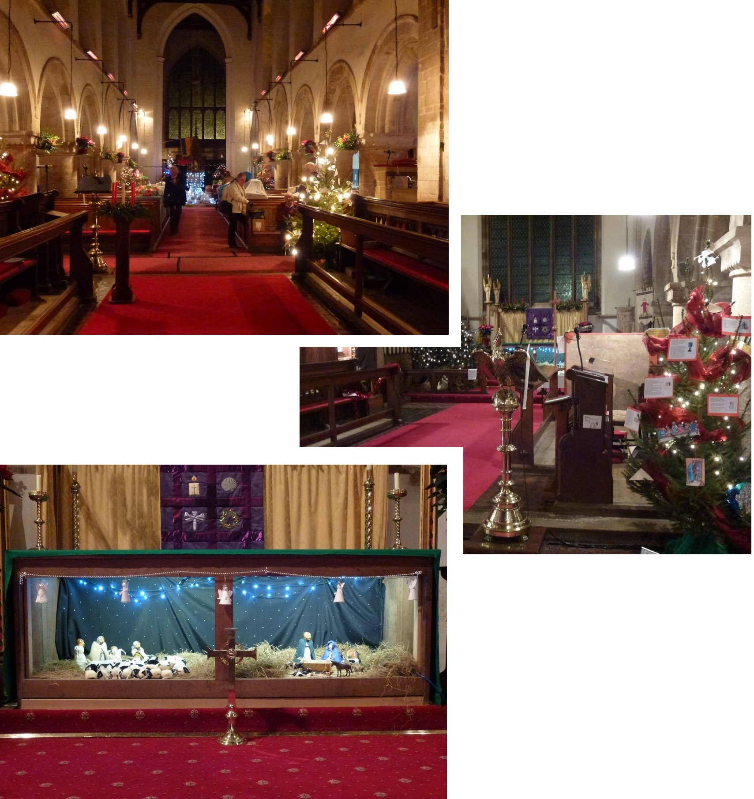
The tree festival café stayed open for tea, ably manned by the local ringers, family and friends.
Edward Vear, Eastern Branch President, chaired the meeting, held in the church café. A few minutes silence was held in memory of Nora Wall, long standing member of the Eastern Branch who has died aged 96. Two new members were elected, Clare and James Barker, both juniors. There was a review of the year’s events and planning for next year. Mick Smith gave a report of the recent Guild committee meeting, held in Lincoln. Taylors had been to inspect some towers in the Alford area, and Tony Barker had done inspections at St Matthew’s Skegness and Bennington. Robin Heppenstall has been to visit Algarkirk and Sutterton. Members were reminded that Guild and Branch BRF grants are available for repairs to bells, frames etc. A collection for the Branch BRF raised £27.70, and subsequently John Collett’s sister-in-law has given a £10 donation to the Branch (John’s Christmas gift). Edward closed the meeting with the vote of thanks to Rev Andrew Higginson for the use of the bells and taking the service, Louis for playing the organ, and for the tea team who did such a good job.
More ringing followed, at St James’.
Val Wild
12-Bell Practice, Surfleet, 15th November 2014
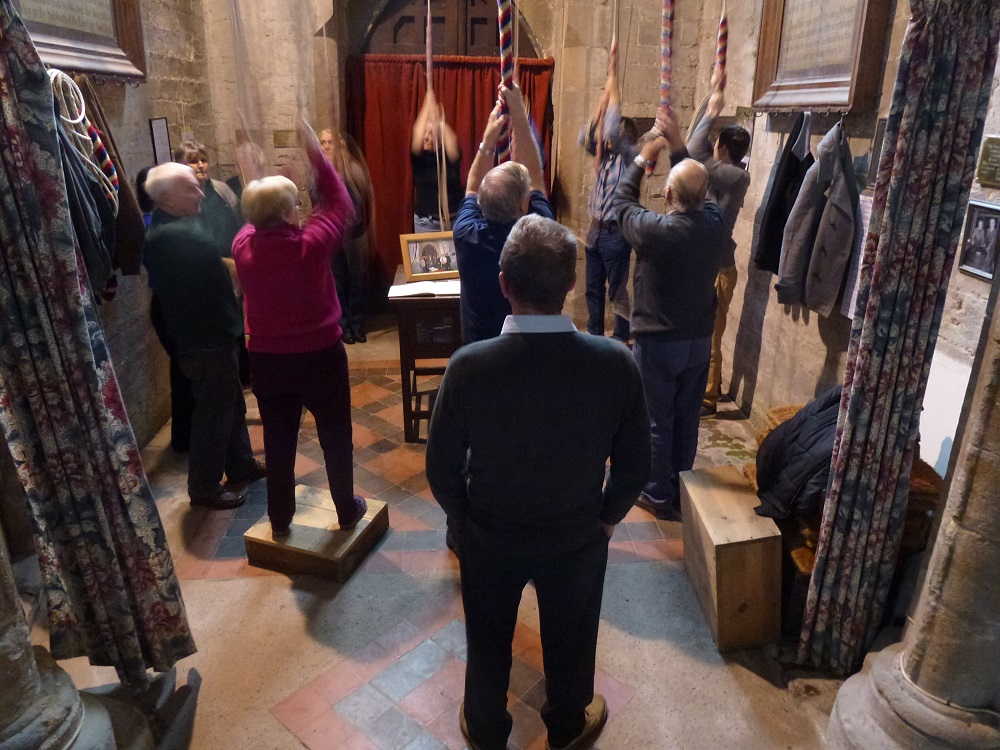
On Saturday 15th November five Eastern Branch ringers and one ex-Eastern Branch (now Central) joined the Elloe Deaneries Branch for their ringing at St Laurence, Surfleet on the ground floor ring of 12 bells.
We rang from 10 to 12, everything from rounds and call changes on 12 to surprise major. It was good to see those ringers not used to ringing on more than 6 having a go on higher numbers. The ringing was supported by Central, Southern and Eastern Branch ringers, and followed by a delicious lunch, which was also open to the local villagers.
Val Wild
Branch Practice, Ingoldmells, 1st November 2014
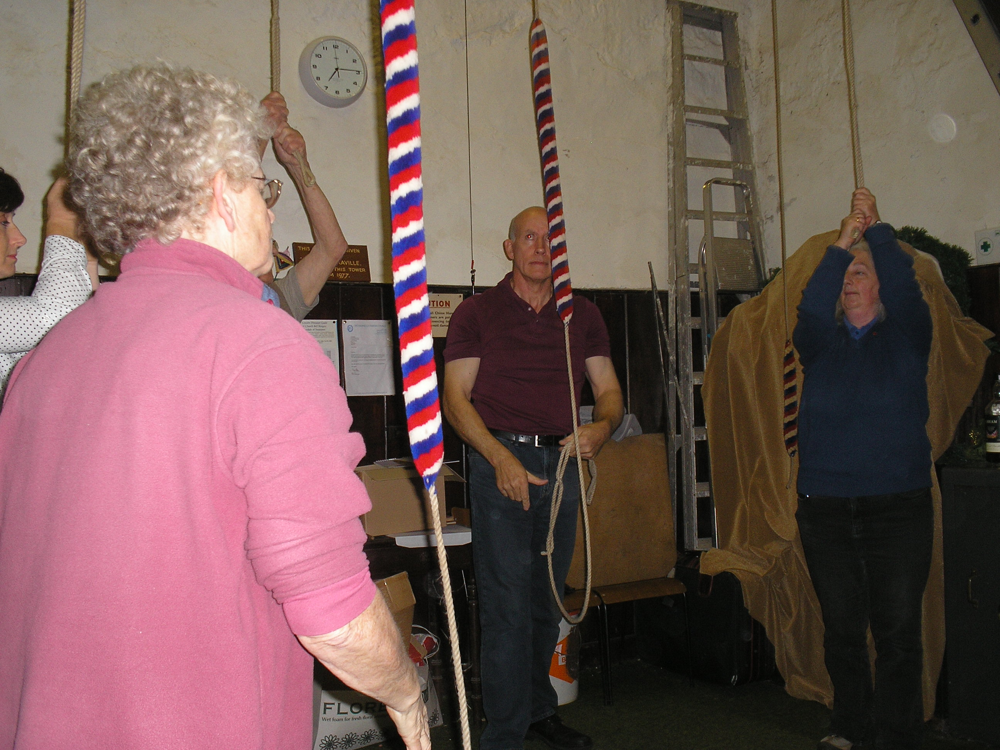
Eastern Branch members enjoyed the opportunity to ring the bells at Ingoldmells on the afternoon of Saturday 1st November. As usual there was a range of ringing to suit all abilities, with some learners ringing on eight bells for the first time. We were grateful also for the tea and biscuits provided by the local church members.
Report: Mark Hibbard
Photograph: James Barker
'Race-Night' Fund-Raising Event, Surfleet, 25th October 2014
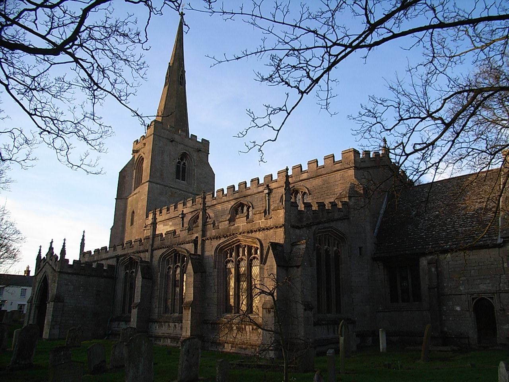
On the evening of October 25th 2014 a group of over 30 of bell ringers assembled in Surfleet to indulge their gambling habit at the “Betty Collett Cup Meeting” - Eastern Branch's fund-raising Race Night in support of the Guild Bell Repair Fund.
Whilst the crowds gathered, some of them supported their other ‘habit’ by ringing the bells of St Laurence, Surfleet, the visitors could not believe how much the tower leans, actually as much as that other tower in Pisa.
There was a full race card of nine races, each race having eight horses. All of the horses in the first eight races had been pre-sold to owners from throughout the Guild branch for the very modest sum of £2-50 each!
- Race 1 was won by ‘Willycan’ owned by Richard Willoughby
- Race 2 by ‘Sleaford Sprinter’, owner Alan Bird
- Race 3 ‘Ten Dollar Bill’, Sue Reynolds
- Race 4 ‘My Lady Cross Stitch’, Louie Smith
- Race 5 ‘Retired Early’, Paul Collett
- Race 6 ‘King of the Road’, Michael Reynolds
- Race 7 ‘Percy Vere’, Edward Vere
- Race 8 ‘What a Rocket’, Sue Faull
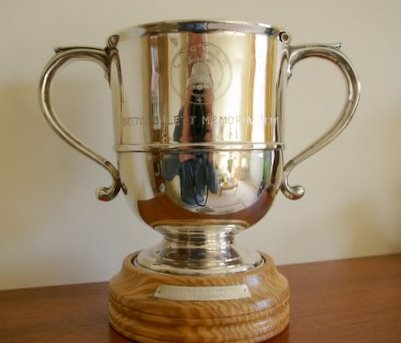
The last race of the night was the “Betty Collett Cup”. This was a competition between the winning horses from the previous races. The winner of the race was 'My Lady Cross Stitch' owned by Louie Smith, who will be the proud holder of the Betty Collett Memorial Cup for the next 12 months, and was also awarded a gift voucher kindly donated by John Collett. Running a close second in the race was 'Retired Early', owned by Paul Collett.
During the evening, betting on the races was fast and furious, perhaps becoming a little more so as the losers drowned their sorrows and the winners celebrated their success. At the halfway point in the proceedings there was a welcome break for a superb sausage and mash supper produced by Annette Rhodes. A record breaking 111 sausages were eaten, followed by a choice of puddings.
The raffle provided more fun and prizes, and Guild calendars with the famous Boston Stump, were on sale at £5 each.
Overall, we raised an excellent £455.00 for the Guild Bell Repair Fund, for which our thanks go to all who participated in any way in the evening. In closing, we must thank our race sponsor for the evening: David Reynolds Motor Mechanic, and also to FH Bates and Son for a kind additional donation.
Report: Phil Ford
Photographs: Val Wild
Guild 8-Bell Striking Competition, 11th October 2014
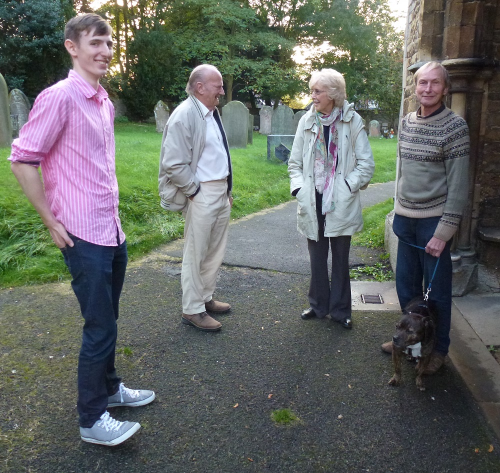
Eastern were one of only four Branches that entered for this year's Guild 8-Bell Striking Competition at Washingborough. The test-piece consisted of three courses of Grandsire Triples and, unfortunately, several method errors resulted in a score that left us in fourth place, some way behind the winners (West Lindsey Branch).
A more detailed report (with additional photographs) is at the Guild website [click here]
Photograph right shows half of the Eastern Branch band beforehand with Alfie their lucky (?) mascot. Left to right: Joe Waters, Brian Bunting, Viv Simpson, David Collin and Alfie
Report: Mark Hibbard
Photograph: Val Wild
Eastern Branch Annual Coach Outing, 4th October 2014
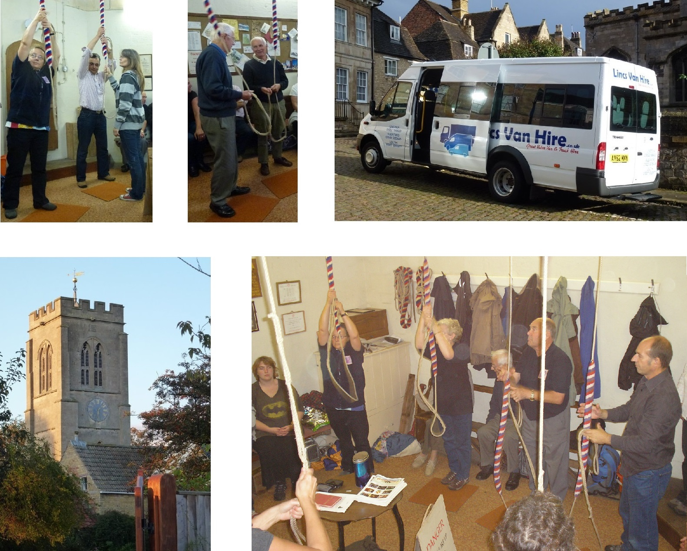
The Eastern Branch stayed in Lincolnshire for this year’s annual outing, visiting six towers in the Deeping and Stamford areas. Once again Ian Ansell’s meticulous planning made for a well-organised and enjoyable day, with ringers from other Branches adding to the attendance and helping to increase both the variety and general standard of ringing. Simon Pearson did a good job of driving the minibus, though the traditional appeal for ‘tips’ resulted only in advice about what he should do having passed the Treble in 3/4 on the way up!
The full itinerary for the day was; Deeping St James, Stamford Baron, Stamford St John, Stamford All Saints, West Deeping and Market Deeping.
Report: Mark Hibbard
Photograph: Val Wild
Heritage Weekend at All Saints Benington, 13-14 September 2014
The Eastern Branch of LDGCB were able to obtain permission to ring the bells at this closed church, over Heritage Weekend and a well struck quarter peal of Grandsire Doubles was rung on the Saturday, when Jo French recorded her first in the method [see QP detail].
Further ringing took place on both Saturday and Sunday afternoons with both sessions being very well attended, with visitors from Kent, Surrey, Warwickshire, South Derbyshire and North Yorkshire, with many more ringers from the Lincoln Guild. All together, about 50 ringers attended during the weekend.
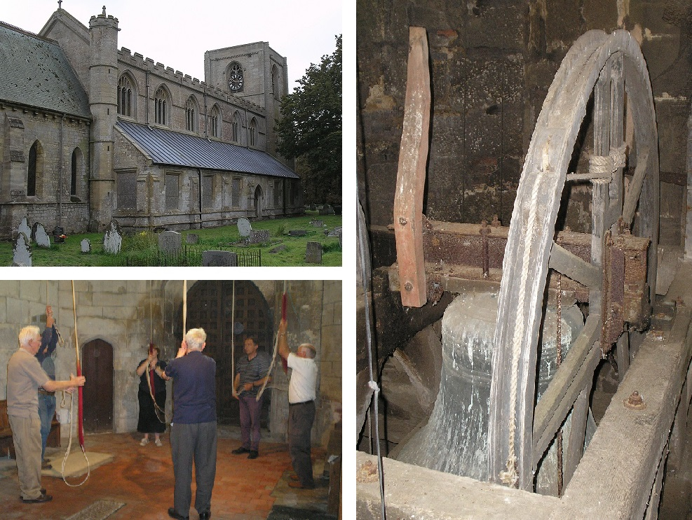
Thanks must go to all those who helped to make this a most successful weekend, especially Tony Barker, who spent time in checking over the bells and ropes.
We are hoping that we shall be able to ring the bells again, maybe for some practice nights, but this has still to be negotiated.
John Collett
Tattershall Castle 'Centenary' Events, 8th - 9th August 2014
Ringers from across the Eastern Branch rallied to help the Coningsby/Tattershall band when they were asked to ring at Tattershall Church in support of events at the neighbouring Castle on Friday 8th and Saturday 9th August.
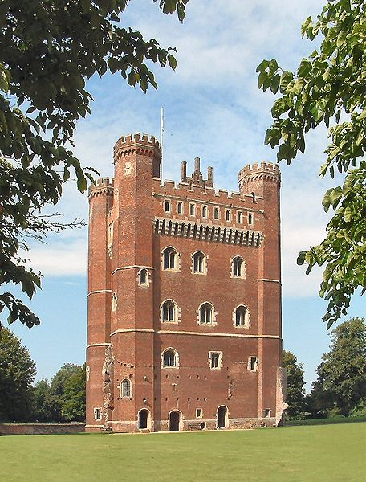
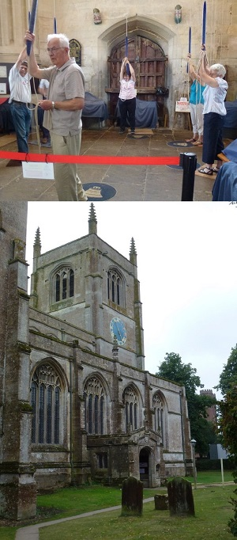
The events, organised by the National Trust, were to mark the centenary of the Castle's restoration and opening to the public. The Castle was built by Ralph Cromwell (Lord Treasurer of England) between 1434-1447, but had become a ruin and was being used as a cattle shed when Lord Curzon of Kedleston bought it and completed the restoration between 1911 and 1914.
After ringing on the Saturday several took the opportunity to attend the Silver Band concert and Light Show event in the Castle grounds.
The Coningsby/Tattershall band are very grateful to those who travelled to help, and the National Trust thanked all the ringers for supporting their celebrations.
Mark Hibbard
Lincoln Cathedral Ringing, 3rd August 2014
On Sunday 3rd August 2014, ringers from the Eastern Branch and Elloe Deaneries plus friends from Southern and Central, met at 2.15 in the Ringers’ Chapel prior to ascending to ring for evensong at Lincoln. Parking had proved a problem for some, and the walk back to the cathedral was a good warm up, there are fewer steps than at Boston, so up we went with ease. The bells were already up, with ringing master Caitlin Meyer in charge we rang lots of rounds and call changes, and some methods on ten or twelve bells.
The weather was perfect and after ringing we were invited to take in the view from the balcony. We could see for miles!
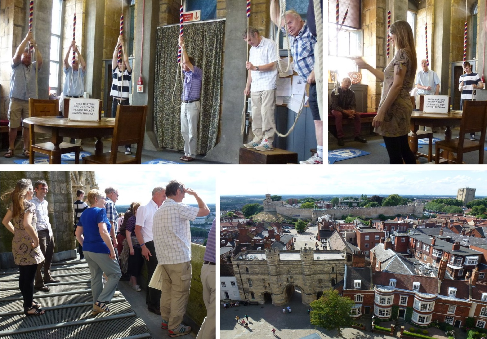
Val Wild
Princess Royal Visit, Boston, 16th July 2014
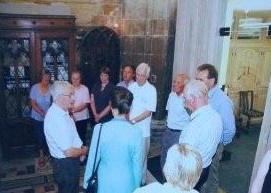
St. Botolph's bells rang out on Wednesday 16th July 2014 to greet Princess Anne, a Patron of the Church, when she visited St. Botolph's Church to see how the building repair work had progressed since the floods in December 2013. Many people were presented to the Princess, including the bellringers as shown on the photograph - left to right Penny Fountain, Tom Freeston, Annette Rhodes, Caroline Beach, Princess Anne (back view), Louis Watson, John Collett, David Bennett, Bill Daubney and Simon Pearson.
Tom Freeston
Ringing World National Youth Contest, Worcester, 5th July 2014
After the long journey for all, we met in the chapter house of the magnificent Worcester Cathedral where we all went to register the team and to receive our coloured wristbands. It was then decided that the best place to start off the day’s ringing would be St Johns in Bedwardine, so under instruction from our esteemed leader (Bridget) who had been in Worcester the day before and had managed to locate all the towers in the city we began our travels.
On arrival at St Johns, we left our bags (and a guitar) downstairs while we went upstairs to practice our test piece on what were a recently rehung ring of 8, which were fantastic to ring and to listen to.
After ringing, the team broke up as three of us went to ring at the 12 bell master class, this was for young ringers who wanted to have a go or improve their ringing on 12 bells. This was largely supported by the recently successful Birmingham 12 bell band; it allowed 3 young ringers to ring with the band in order to successfully master rounds and call changes, which was enjoyed by all.
We then met with the rest of the Poachers to ring at the Cathedral’s teaching centre, located underneath the ringing room. Here we rang on 8 dumb bells which are connected to ABEL and allowed us to ring a single bell to a method of our choice independently while listening through headphones so as not to disturb others. A variety of methods were rung, from Plain Hunt on 8 to Little Bob Maximus.
We then journeyed to the competition tower, however we couldn’t ignore our growing hunger and so utilised our McDonald’s vouchers after somewhat of a mystery tour. Fully refuelled, we set off for Old St Martins in the Cornmarket, where the competition was in full swing on the back 8 of the 10 bells.
We were greeted by the ominous sound of a single bell being rung down before being told that a previous team had broken the stay on the 6th (8th of the 10) which had to be replaced with the stay from the treble of the 10 - meaning careful handling was required on this bell so as not to break the stay. With this in mind, we rang our test piece, using our signature change of swapping all the pairs in the same call. We stood the bells, being very pleased with the ringing produced and feeling a huge sense of relief and pride. James especially felt relieved after having to be careful with the 6th and it’s somewhat suspect stay.
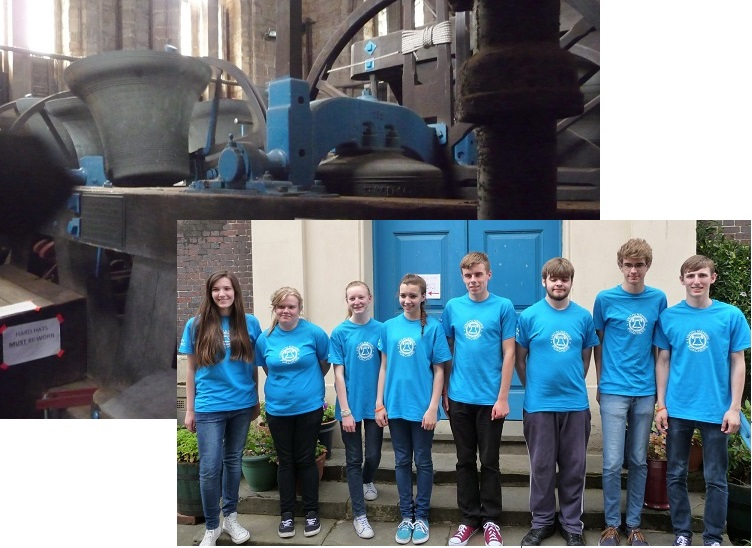
When we came down the tower, we were greeted by a number of photographers; we then left to ring at All Saints, stopping at a music shop along the way.
When we arrived at All Saints we ascended the tower and rang some well struck call changes. We concluded a successful day of ringing at the cathedral, a heavy ring of 12, which well known to be rather tricky to ring due to their weight and the tower movement. However, all of the team coped very well and rang some nice rounds. We then ventured to the roof of the tower which was not for those who were afraid of heights (or had sea sickness) as the tower movement was definitely felt – most notably by Sue Faull.
After leaving the tower, we found somewhere to rest as it had become very warm at this point (mainly due to having just rung at the Cathedral). The lunch boxes were out and one member of the team had come prepared with enough sausage sandwiches to feed the 5 thousand!
The time came for the results and each team was called out to take their seats in the hall. The judges’ (Andrew Rawlinson, Edward Mack and our very own Alistair Cherry) comments were read out and the places were given, we were awarded 4th place in the call changes category with a B we were all very pleased with this result!
Unfortunately I had to leave at this point but there was a hog roast and drinks afterwards which I hear was a great hit with everyone.
Once again it was another enjoyable and successful year for the poachers and many thanks go to Sue Faull and Ian Till for all their hard work and effort which went into organising and planning the practices and the team. Thanks also go to all the supporters who helped on the day. A large vote of thanks to the Guild for the support with funding the team for this competition, this funding is imperative in enabling us all to take part and to have a souvenir t-shirt.
This was my final year but I hope to still support the poachers next year when the RWNYC descends upon Oxford.
See also the Ringing World's report: [Click here]
Joe Waters
Eastern Branch BBQ at Sibsey Trader Mill, 5th July 2014
For the twelfth year in succession, the Eastern Branch was able to hold it’s BBQ at Sibsey Trader Mill with the kind permission of Ian Ansell.
Ian and his team had been busy getting everything ready, erecting the tent, fetching the tables and chairs, organising the BBQ, and starring in the BBC’s Countryfile programme, with Ellie Harrison!
Ringing during the afternoon was on the lovely six at Fishtoft, disappointingly few people took the opportunity to have a ring between 5.30 and 6.45. Then it was off to Sibsey.
The Willoughby family were lit up and ready to cook, teas and coffees were available, there were salads and puddings galore.
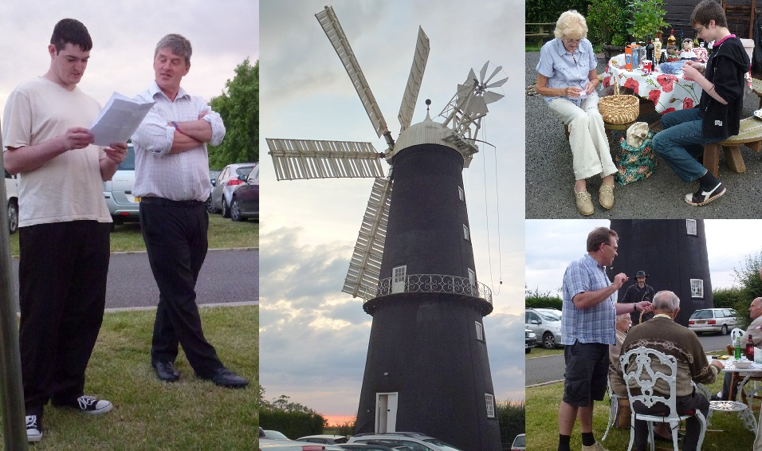
The quiz was written by Ian Evans, ‘The theme this year – World Cup plus other stuff’, some answers we knew, others we didn’t and the rest we just guessed at, but it was all good fun. The winners were: five and under Matthew Evans 10 correct, 16 and under Charlotte Evans 61 correct, adults Phil Ford 59 correct answers, out of 81 questions.
Viv Simpson was in charge of the raffle, helped by Bradley and Thomas, which raised £87 towards the total of £404 for the Eastern Branch bell repair fund. How many bell ringers are colour blind? When the raffle was drawn, Simon Pearson was in charge, were the tickets, white or grey or blue or green, or lilac? The fading light was perhaps to blame?
Background music was jolly and supplied by Greg, we even knew the words to some of the tunes.
Best of all the weather was beautiful. Very many thanks to everyone who joined us, supporting the Eastern Branch, and to all who contributed in any way to making the evening so enjoyable and such a success.
Val Wild
BBC 'Countryfile' at Sibsey Windmill, 29th June 2014
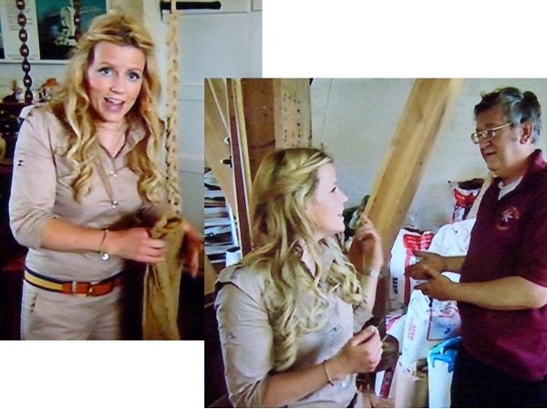
The episode of 'Country file' broadcast by the BBC on Sunday 29th June included a feature on Lincolnshire's windmills.
As part of this feature the presenter Ellie Harrison visited Sibsey Trader Mill where Eastern Branch ringer Ian Ansell explained how the mill operates.
Val Wild
Plain Bob Practice, Butterwick, 21st June 2014
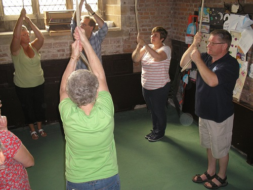
About twenty local ringers attended a practice event at Butterwick aimed specifically at Plain Bob. There were enough helpers for all the learners to practice both Plain Bob Doubles and/or Plain Bob Minor. In addition to plenty of plain courses, some touches were rung (including both Bobs and Singles).
Everyone agreed that Jo French did a great job of organising this event and thanks go to all the helpers.
Mark Hibbard
Branch 6-Bell Striking Competition, Coningsby, 7th June 2014
Three towers entered for the Branch 6-Bell striking competition this year at Coningsby. Ringers gathered at the Pavilion on the Allan Barker recreation ground near to the Church, where they were able to listen to the ringing whilst enjoying sandwiches and cakes.
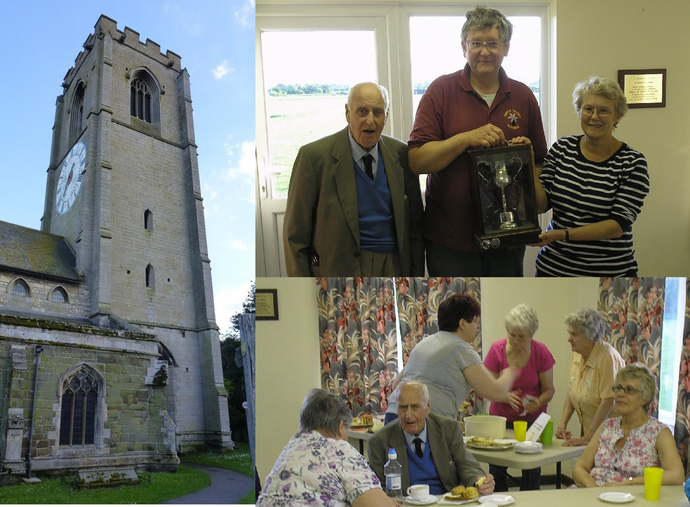
Sue Faull had kindly agreed to judge, ably assisted by Jim Sutherland. Jim congratulated everyone for taking part before Sue announced the results as follows:
First: Kirton in Holland, ringing Plain Bob Doubles, 35.5 faults.
Second: Coningsby, ringing Called Changes, 46 faults.
Third: Boston, ringing Grandsire Doubles, 56 faults.
Although Kirton's score included a penalty for exceeding the required 240 changes, they were successful in retaining the George Brewster Cup again this year and Ian Ansell received the trophy on behalf of the Kirton band.
Before we closed, Simon gave a vote of thanks to the Coningsby ringers for hosting the competition, especially those that worked beforehand to provide the sandwiches and cakes, and to Geoff and Shane who worked hard in the kitchen all evening.
Simon also reminded everyone that the next EB event is the BBQ at Sibsey Trader Mill on July 5th at 7pm with ringing before at Fishtoft from 5.30pm. Tickets will be on sale, as numbers are needed for the catering, contributions of salads and sweets will be most welcome.
Mark Hibbard
Branch Meeting at Gunby and Burgh-le-Marsh, 3rd May 2014

Although wedding commitments reduced attendance at Gunby in the afternoon, there were enough ringers to make good use of the five lightweight bells, and we were pleased to be joined by Sue Buckingham - a former Eastern Branch Secretary. The ringing at Gunby finished with a short touch of Grandsire Doubles.
Others joined at Burgh-le-Marsh where the service was led by Father Terry Steele, Louis Watson played the organ and John Collett read the lesson. Father Terry Steele’s dog punctuated proceedings with loud snores, his excuse being he’d had a long day!
After the service everyone enjoyed the lavish feast of sandwiches, cakes, and more (!) provided by Simon Pearson.
The formal meeting included a brief review of the planning for forthcoming events (including, of course, the summer bar-b-q and the annual outing) and an update from Mick Smith on the recent Guild AGM in Lincoln.
The day was rounded off with ringing on the eight bells at Burgh-le-Marsh, including a half-course of Cambridge Surprise Major.
A collection made during the day for the Bell Repair Fund raised £15.65.
Mark Hibbard
Branch Practice at Horncastle, 5th April 2014
About thirty Branch members attended the practice at St Mary's Horncastle on Saturday evening, 5th April.
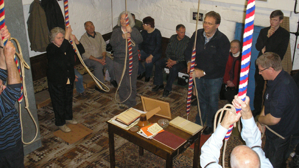
There was the usual opportunity for plenty of called changes and plain doubles, and the good turnout enabled a greater range of ringing than usual (including: plain courses of Cambridge Surprise Minor and Norwich Surprise Minor, and touches of Stedman Doubles and Single Court Bob Minor).
Simon Pearson reminded everyone of the forthcoming Guild AGM (26th April) and the changes being proposed by the Guild Committee [click here for more].
Mark Hibbard
Branch Practice at Boston Stump, 1st March 2014
Branch members were supported by ringers from across the Guild, providing a good attendance for the practice at Boston Stump.
As well as the ringing, the good weather enabled visitors to enjoy the views of the local area and down through the trapdoor in the floor!
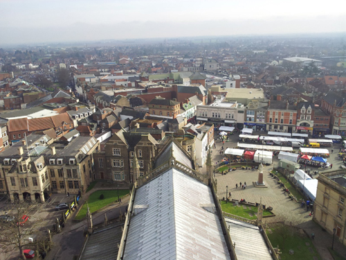
£15 was raised for the Branch Bell Repair Fund, also Yvonne Smith provided tea, coffee and cake refreshments downstairs during and after the ringing and raised nearly £50 for The Stump flooding repairs fund.
Jonathan Clark has posted a detailed report, with additional pictures and video, on the Guild website: [here].
Report: Mark Hibbard
Photograph: Jonathan Clark
Boston Welcomes New Team Rector, 26th February 2014
The ten bells of St. Botolph's Church, Boston, rang out on Wednesday evening the 26th February 2014 prior to the Service of Collation and Induction of The Reverend Alyson Christina Buxton, MTh, MA, as Team Rector of Boston.
Tom Freeston
Branch AGM at Friskney, 25th January 2014
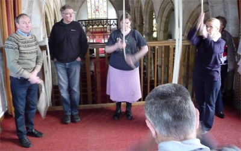
Eastern Branch members, with several visitors and Officers from the Lincolnshire Diocesan Guild of Church Bell Ringers, met at Friskney on Saturday 25th January for the Eastern Branch Annual General Meeting.
The day began with some open ringing before a service led by Revd Fiona Cotton-Betteridge, and featuring Boston ringer Louis Watson on the organ.
Tony and Isabel Barker had arranged hot lunches in the village hall, which also provided a comfortable venue for the AGM itself.
The meeting included election of Branch Officers, most being re-elected, the only changes being Mick Smith standing down as Maintenance Team Leader (replaced by Tony Barker) and Val Wild standing down as Website Editor (replaced by Mark Hibbard). A full programme of events was also proposed for the year.
Two ringers from Alford - Sally Rowan and Tia Moroney - were elected as new members of the Guild.
The day finished back in the tower with a good variety of open ringing.
Jonathan Clark has posted a more detailed report, with additional pictures, on the Guild website: [here].
Report: Mark Hibbard
Photograph: Jonathan Clark
Special Minor Practice at Freiston, 4th January 2014
During the afternoon of Saturday 4th January 2014, members of the Eastern Branch met to practice Single Court Bob Minor and Single Oxford Bob Minor at St James Freiston. Luckily for some, thirteen ringers practiced plain courses, bobs, and especially singles, mixed up with some Plain Bob to keep everyone ringing.
During a short break everyone was thanked for their attendance, informed that Roy Withyman’s funeral is on Monday 6th January at Pinchbeck at 2.30, reminded that it is the Surprise Major practice at Sutterton on Friday 10th January at 7.30 and to book lunch for the Eastern Branch AGM at Friskney on Saturday 25th January by phoning Simon Pearson.
Assistant Ringing Master, Jo French was in charge once she had her breath back after raising the 5th in peal. She was armed with detailed method sheets (including blue lines - see the links above) from the St. Chad’s Pattingham Bellringers web site, worth a look at: www.pattingham-ringers.org.uk
The afternoon finished with a touch of Single Oxford Bob Minor and the bells lowered in peal. Progress was made during the afternoon and it was agreed that an extra practice devoted to learning a new method or two was worth repeating.
Jo French reminded us that 2014 is the 900th anniversary of the building of St James, Freiston, and that visiting bands are welcome to ring for this important year, contact Jo.
Val Wild